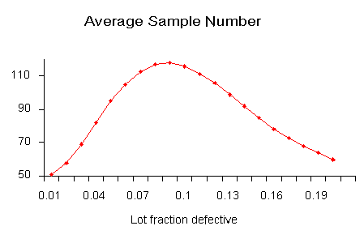

|
6.
Process or Product Monitoring and Control
6.2. Methods of Process Monitoring and Control 6.2.5. What are Sequential Plans and Average Run Length (ARL)?
|
|||
|
|
|||
| The Average Sample Number | In single sampling, the sample size remains
constant, while in double sampling the sample size depends on whether or
not a second sample is required. The probability of a second sample will
vary with \(p'\), the true fraction defective in an incoming lot.
Consider a double-sampling plan \(n_1 = 50\), \(c_1 = 2\), \(n_2 = 100\), \(c_2 = 6\), is the sample size for plan 1, with accept number \(c_1\), and \(n_2\), \(c_2\), are the sample size and accept number for plan 2. Let \(p' = 0.06\). Then the chance of acceptance on the first sample which is the chance of getting two or less defectives = 0.416 (using binomial tables). The chance of rejection on the second sample, which is the chance of getting more than six defectives is \(1-0.971 = 0.029\). The probability of making a decision on the first sample is 0.445, equal to the sum of 0.416 and 0.029. With complete inspection of the second sample the average size sample is equal to the size of the first sample times the probability that there will only be one sample plus the size of the combined samples times the probability that a second sample will be necessary. For the sampling plan under consideration the average sample number (\(ASN\)) with complete inspection of the second sample for a \(p'\) of 0.06 is $$ 50(0.445) + 150(0.555) = 106 \, . $$ The general formula for an average sample number curve of a double-sampling plan with complete inspection of the second sample is $$ ASN = n_1 P_1 + (n_1 + n_2)(1-P_1) = n_1 + n_2(1-P_1) \, . $$ where \(P_1\) is the probability of a decision on the first sample. The graph below shows a plot of the \(ASN\) versus \(p'\). 
|
||